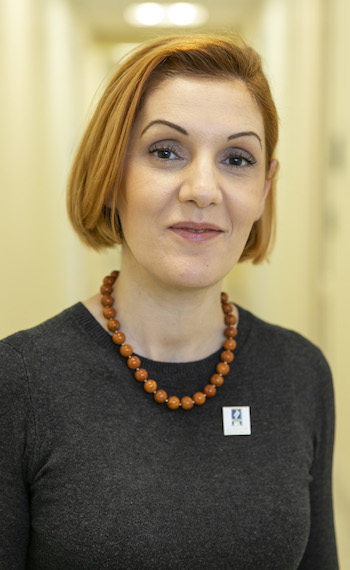
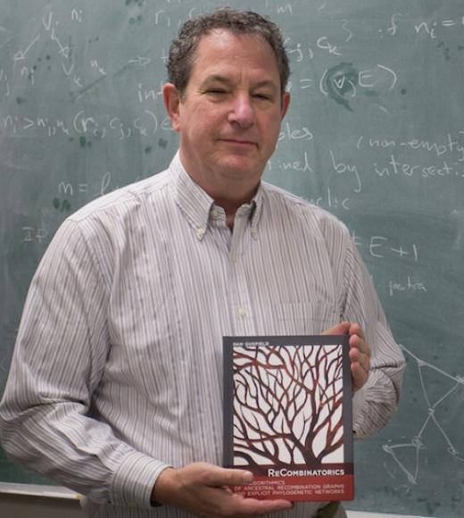
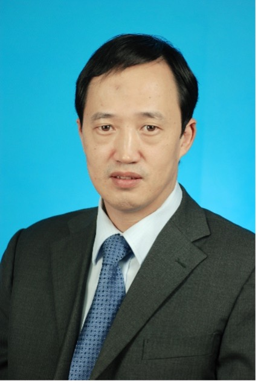
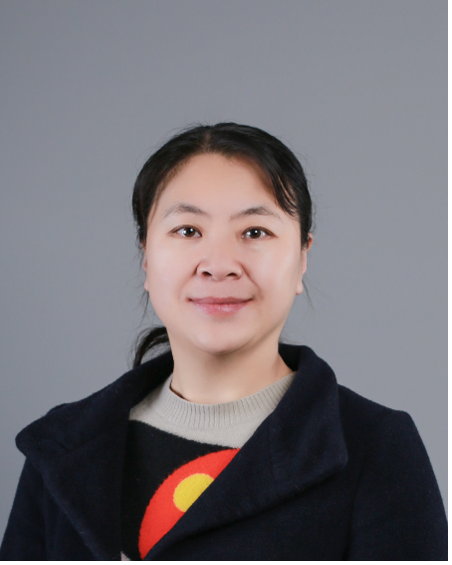

Keynote Speakers

Amarda Shehu, PhD
Professor of Department of Computer Science
College of Engineering and Computing
George Mason University
Fairfax, VA, USA

Dan Gusfield, PhD
Professor of Department of Computer Science
College of Engineering
University of California, Davis
Davis, CA, USA
Marylyn D. Ritchie, PhD, FACMI
Professor of Genetics and Director of the Institute for Biomedical Informatics
School of Medicine
University of Pennsylvania
Philadelphia, PA, USA

Huafu Chen, PhD
Professor of School of Life Science and Technology
University of Electronic Science and Technology of China
Chengdu, China

Min Li, PhD
Professor of School of Computer Science and Engineering
Central South University
Changsha, Hunan, China
Title: Representation Learning from Genotypes to Phenotypes: Linking Chemical and Biological Space in Small Molecules and Macromolecules
Abstract:
Molecular biology has undergone many disruptions and revolutions that have opened entire domains of scientific enquiry, including Bioinformatics. Anfinsen showed us that protein tertiary structure was largely encoded in the amino-acid sequence. John Kendrew’s famous sentences “The way in which the chain of amino acid units in a protein molecule is coiled and folded in space has been worked out for the first time. The protein is myoglobin, the molecule of which contains 2,600 atoms.” instigated decades of seminal computational studies on macromolecular structure, dynamics, and function by Scheraga, Karplus, Levitt, Warshel, and others. Powerful computational concepts and techniques were debuted in these studies, many of which we would now categorize as “Artificial Intelligence” (AI). In my own work, I focused heavily, and still do, on the question of representation, which is central to AI. Then came the data revolution and revival of neural networks, and most recently AlphaFold2. Despite these rapid advances, we are still unable to link chemical and biological space. In this talk I will overview work in my laboratory on AI frameworks that link protein sequence variation to dynamics-governed dysfunction. I will also describe some of our recent Machine Learning frameworks for mapping protein structure spaces and generating small molecules in-silico with controllable biological properties. I hope lessons of success and failure from my laboratory will inspire us to further advance scientific enquiry and address those interesting, complex, and messy questions that molecular biology never fails to provide.
Dr. Amarda Shehu is a Professor in the Department of Computer Science in the College of Engineering and Computing at George Mason University, where she is also Associate Vice President of Research for the Institute of Digital InnovAtion. Shehu obtained her Ph.D. from Rice University in 2008, where she was also an NIH predoctoral fellow in the Nanobiology Program and was dually trained in AI and Molecular Biophysics. Shehu's research is at the intersection of AI/ML and scientific enquiry across disciplines. In particular, her laboratory has made significant contributions to uncovering the relationship between macromolecular sequence, structure, dynamics, and function. Shehu has published over 160 technical papers with postdoctoral, graduate, undergraduate, and high-school students. She is a 2022 Fellow of the American Institute for Medical and Biological Engineering (AIMBE) and has received several awards, including the 2022 Outstanding Faculty Award from the State Council of Higher Education for Virginia, the 2021 Beck Family Presidential Medal for Faculty Excellence in Research and Scholarship, the 2018 Mason University Teaching Excellence Award, the 2014 Mason Emerging Researcher/Scholar/Creator Award, the 2013 Mason OSCAR Undergraduate Mentor Excellence Award, and the 2012 National Science Foundation (NSF) CAREER Award. Her research is regularly supported by various NSF programs, the Department of Defense, as well as state and private research awards. Shehu is currently the chair of the steering committee of the ACM/IEEE Journal on Transactions in Bioinformatics and Computational Biology, where she is also an associate editor. Shehu served as an NSF Program Director in the Information and Intelligent Systems Division of the Computer and Information Science and Engineering Directorate during 2019-2022. She was also an Inaugural Founding Co-Director of George Mason University’s Transdisciplinary Center for Advancing Human-Machine Partnerships.
Title: Using Satisfiability and SAT-Solving in Computational Biology
Abstract:
Integer Linear Programming (ILP) has been very effective in solving many instances of hard computational problems that arise in Computational Biology, and ILP is now a (relatively) widely used technique for such problems. However, in writing a recent book on ILP in computational biology I found several problems where ILP was suprisingly ineffective. And so, over a period of several years, I (and students) have explored the use of Satisfiability-modeling and SAT-solving for instances of these hard problems. We found that this approach is effective in a number of hard problems where ILP is not. This talk will discuss a variety of problems in computational biology and show how to model them using Satisfiability; and how to solve instances of the problems using SAT-solvers.
Dr. Dan Gusfield is a Professor in the Department of Computer Science in the University of California, Davis. His primary interests involve the efficiency of algorithms, particularly for problems in combinatorial optimization and graph theory. These algorithms have been applied to study data security, stable matching, network flow, matroid optimization, string/pattern matching problems, molecular sequence analysis, and optimization problems in population-scale genomics. Currently, He is focused on string and combinatorial problems that arise in computational biology and bioinformatics. He served as chair of the computer science department at UCD from July 2000 until August 2004, and was the founding Editor-in-Chief of The IEEE/ACM Transactions of Computational Biology and Bioinformatics until January 2009.
Title: Precision Medicine Research Dimensions Made Accessible by Electronic Health Records
Abstract:
Biomedical data science has experienced an explosion of new data over the past decade. Abundant genetic and genomic data are increasingly available in large, diverse data sets due to the maturation of modern molecular technologies. Along with these molecular data, dense, rich phenotypic data are also available on comprehensive clinical data sets from health care provider organizations, clinical trials, population health registries, and epidemiologic studies. The methods and approaches for interrogating these large clinical data sets continue to evolve rapidly, as our understanding of the questions and challenges continues to develop. Through applying bioinformatics, statistics, and machine learning approaches to the rich phenotypic data of the electronic health record (EHR), these data can be mined to create new avenues of research in precision medicine. In this presentation, I will describe many of these new research dimensions that have been made possible by the accessibility to large electronic health record datasets.
Dr. Marylyn D. Ritchie is a Professor (tenured) of Genetics and Director of the Institute for Biomedical Informatics at the University of Pennsylvania School of Medicine. She is also Associate Director of the Penn Center for Precision Medicine, Director of the Center for Translational Bioinformatics, and Co-Director of the Penn Medicine BioBank. Dr. Ritchie is an expert in translational bioinformatics, with a focus on developing, applying, and disseminating algorithms, methods, and tools integrating electronic health records (EHR) with genomics. Dr. Ritchie has over 20 years of experience in translational bioinformatics and has authored over 375 publications (H-index 88). Dr. Ritchie was appointed as a Fellow of the American College of Medical Informatics (ACMI) in 2020. Dr. Ritchie was elected as a member of the National Academy of Medicine in 2021; she is being recognized “for paradigm-changing research demonstrating the utility of electronic health records for identifying clinical diseases or phenotypes that can be integrated with genomic data from biobanks for genomic medicine discovery and implementation science.” Dr. Ritchie holds a PhD from Vanderbilt University in Statistical Genetics, an M.S. from Vanderbilt University in Applied Statistics, and a B.S. in Biology from the University of Pittsburgh at Johnstown. Dr. Ritchie is also the host of two podcasts: she co-hosts The Biomedical Informatics Roundtable podcast with Dr. Jason Moore and she is the solo host of The CALM Podcast: Combining Academia and Life with Marylyn.
Title: Brain imaging pattern recognition methods and imaging representation of mental disorders
Abstract:
Mental and neurological diseases such as schizophrenia, depression, and autism have high morbidity and rates of misdiagnosis, but their imaging features are unapparent. At present, there are no objective indicators for early diagnosis, risk assessment, and treatment options. One reason is that imaging analysis of these brain illness involves complex artificial intelligence analysis models and methods.
In this report, we will introduce 1) how to use MRI-based brain function and structure imaging information of diseases to characterize brain functional activity, static functional network, dynamic functional and structural network, thereby revealing the neuroimaging mechanism of these diseases; 2) how to use multimodal network-based artificial intelligence pattern recognition methods to discover imaging biomarkers of neuropsychiatric diseases, to improve the classification accuracy, and finally offering data-driven reliable indicators for clinical diagnosis and assessment.
Dr. Huafu Chen is a Professor in MOE Key Laboratory for Neuroinformation, Clinical Hospital of Chengdu Brain Science Institute, University of Electronic Science and Technology of China. He is a Changjiang distinguished professor, a recipient of the national science fund for distinguished young scholars, Elsevier China Highly Cited Scholar (2020/ 2021) and top 2% of the world's neuroscience scientists of China. Currently, he is a director of the Chinese Society of Image and Graphics, deputy director of the Organization Construction Committee and Visual Cognition and Computing Professional Committee, deputy director of MOE Key Lab for Neuroinformation at University of Electronic Science and Technology of China, as well as executive deputy director of High-Field Magnetic Resonance Brain Imaging Key Laboratory of Sichuan Province.
Dr. Huafu Chen focuses his research on developing artificial intelligence and machine learning methods for pattern recognition of magnetic resonance brain imaging data, uncovering neuroimaging mechanism of neurological and psychiatric diseases, detecting typical neuroimaging features of these diseases, and further providing imaging evidences for clinical diagnosis and assessment. Until now, he has leaded more than 20 scientific research projects: 4 key research projects including the National Natural Science Foundation of China and artificial intelligence 2030 research of the Ministry of Science and Technology, 863 and 973 projects and so on. As the corresponding author, he has published 300 papers in SCI journals such as PNAS, Science Advance, Nature Communications, Cell Reports, Molecular Psychiatry, Brain, Neurology, IEEE Transactions on Medical Imaging, etc., which have been cited more than 10,000 times by SCI papers, and won Sichuan Province scientific and technological progress first prize in natural Science category.
Title: Computational solutions to explore genomic 3D organization
Abstract:
In eukaryotes, chromatin folds into a complex three-dimensional structure that plays a critical role in gene expression, cell function, and biological development. Chromosome Conformation Capture (3C) based technologies, such as 3C, 4C, 5C, Hi-C, ChIA-PET and HiChIP, have characterized the architecture of 3D genome. However, limited by the expense and time cost of wet lab experiment, it is a great challenge to explore the chromosome contacts of unrecognized cell line or species. This talk will overview different technologies for 3D genome and present computational solutions to explore genomic 3D organization. This talk will also describe some of our recent work for calling targeted 3D chromatin loops, evaluating targeted chromatin conformation capture-specific methodologies, and a new database to provide all the curated pathological variants and genomic disruptions for mining the putative pathological effects of any genetic mutation.
Dr. Min Li is currently a Professor and the vice dean at the School of Computer Science and Engineering, Central South University, P. R. China. She is a recipient of the National Science Fund for Distinguished Young Scholars and Elsevier China Highly Cited Scholar (2020/ 2021). Currently, she is a director of the Hunan Provincial Engineering Research Center for Intelligent Computing in Biology and Medicine, and deputy director of the Hunan Provincial Key Lab on Bioinformatics. She is serving as the Editorial Board Member of Big Data Mining and Analytics, International Journal of Data Mining and Bioinformatics, International Journal of Bioinformatics Research and Applications, and Interdisciplinary Sciences: Computational Life Sciences. Her research interests include Algorithms for Computational Biology and Bioinformatics, mainly focus on algorithms and tools in de novo genome assembly, 3D genome, biological network analysis and protein bioinformatics, etc. She has published more than 100 technical papers in refereed journals such as Genome Biology, Genome Research, Nucleic Acids Research, Bioinformatics, IEEE/ACM Transactions on Computational Biology and Bioinformatics, and conference proceedings such as BIBM, GIW and ISBRA. According to Google scholar, her paper citations is more than 9000 and H-index is 49.